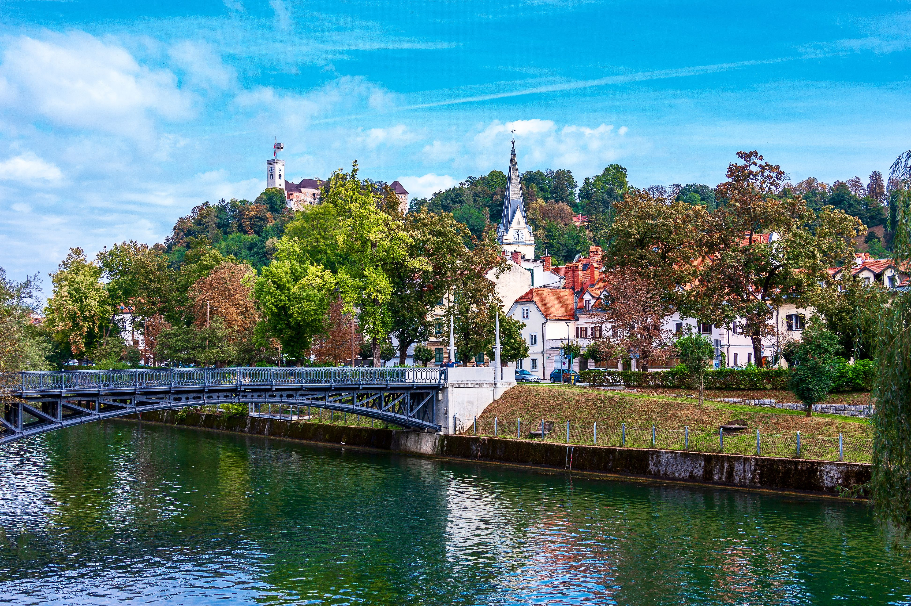

Lubiana · la città del fiume
01 · La capitale
Lubiana
Una capitale che non ha bisogno di fare rumore per farsi notare. La Ljubljanica attraversa il centro come un filo verde, tra ponti, facciate colorate e tavolini sull’acqua. È il punto di partenza ideale per entrare nel ritmo sloveno: a piedi, senza fretta, lasciando spazio anche alle strade secondarie.